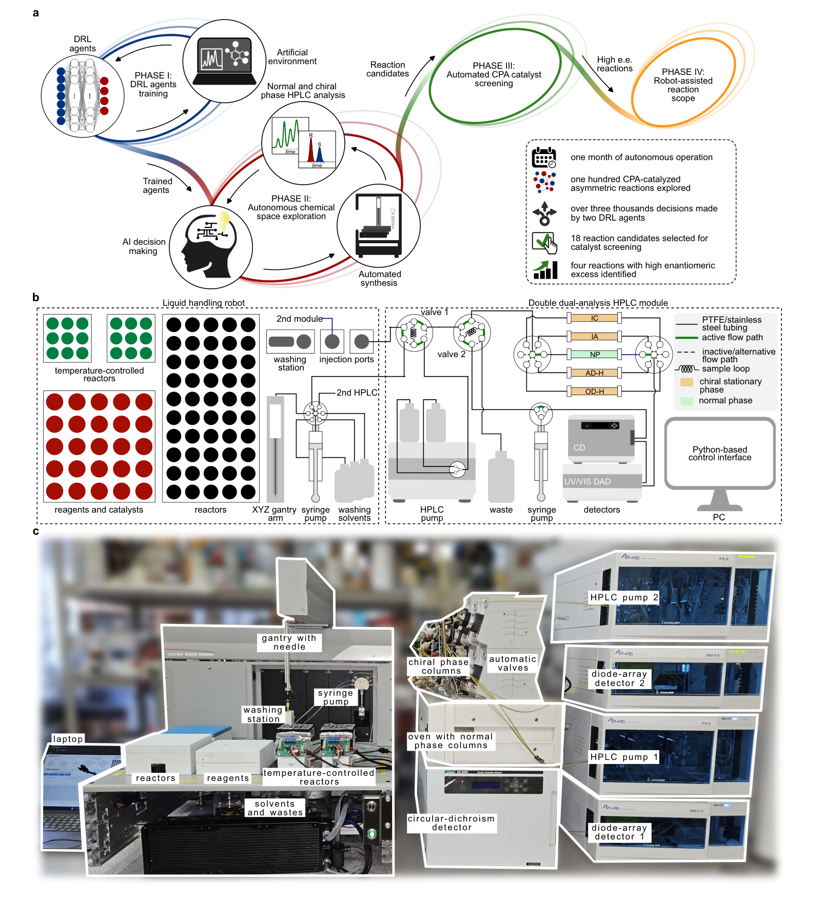
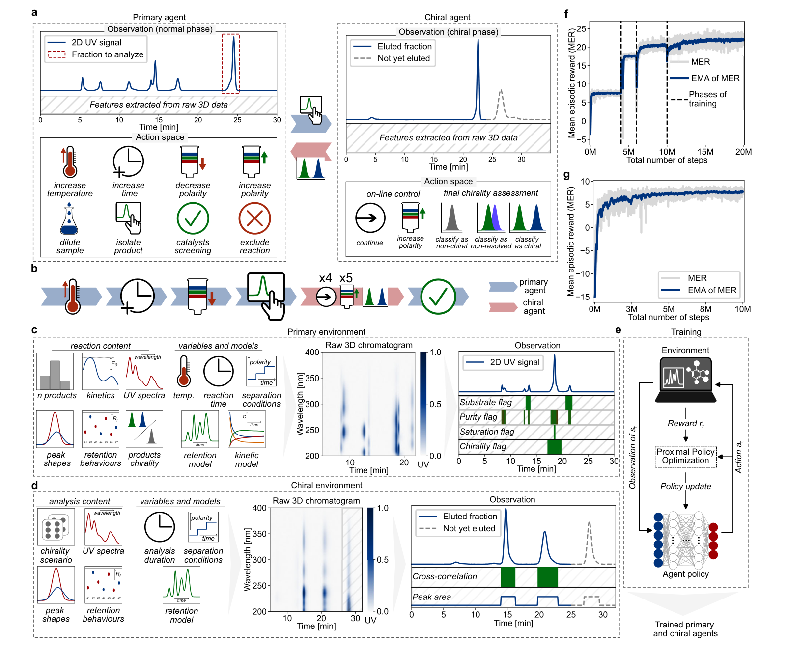
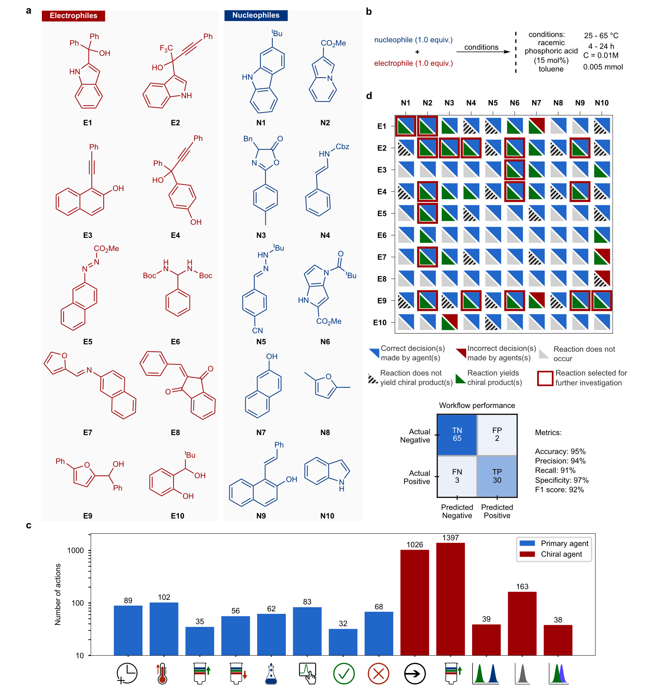
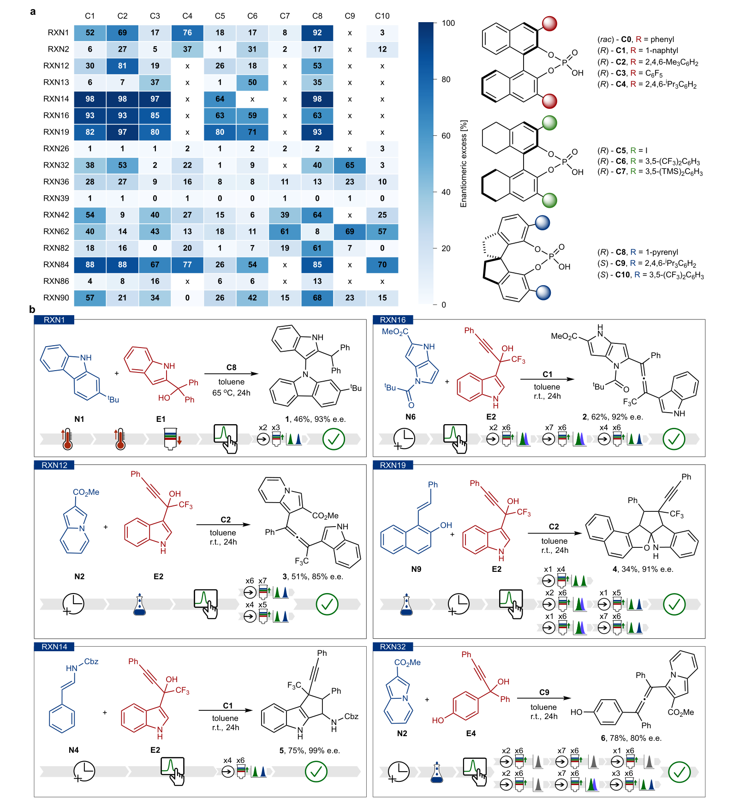
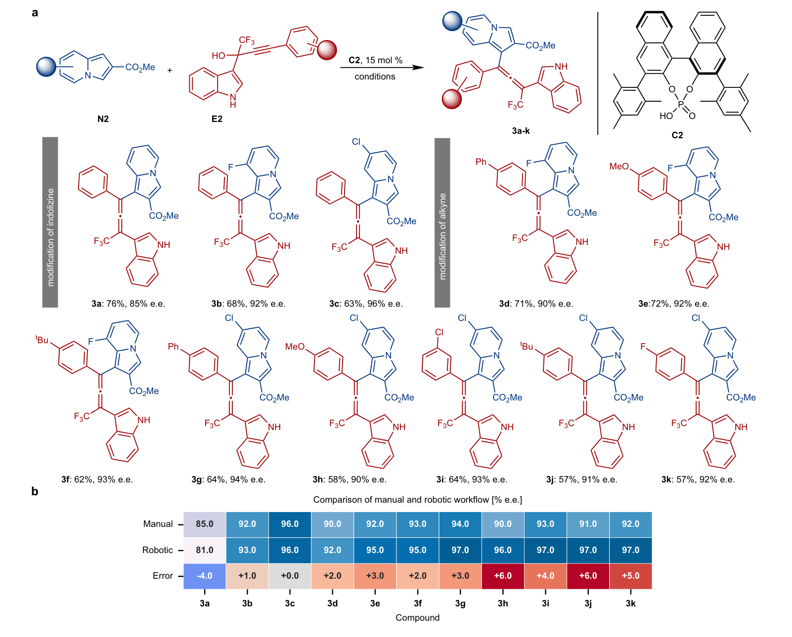
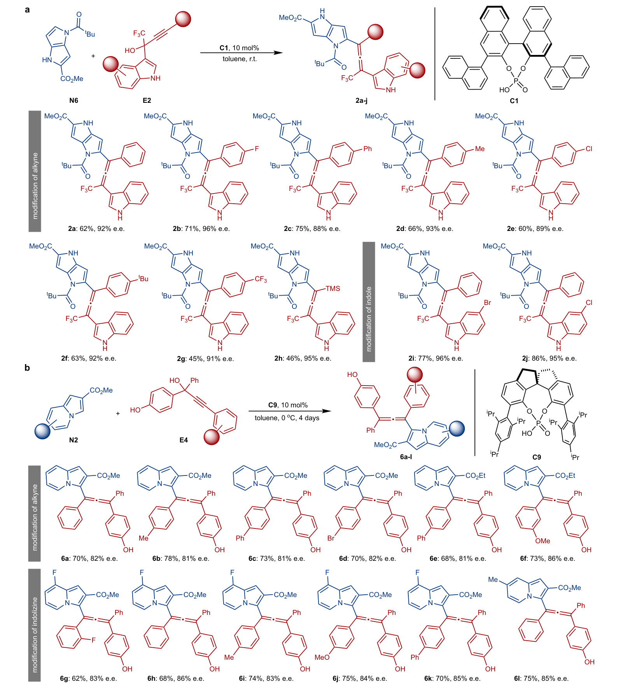

让机器人根据色谱继续实验：强化学习驱动不对称反应发现
论文原文 ↗Reinforcement learning guided robotic platform that investigates and discovers asymmetric reactions
Patryk Klochowicz、Ahmad F. Kassir、Chandrakanta Parida、Jarosław M. Granda｜Nature Communications，2026年10月13日｜DOI｜
寻找新的不对称反应，需要连续回答几类问题：原料发生反应了吗？新色谱峰对应的产物具有手性吗？分离还不充分时，应该继续等待、改变洗脱条件，还是换一根手性柱？找到有希望的反应以后，又该怎样筛选手性催化剂并考察底物适用范围？这些决定前后依赖，单纯优化一个已知反应的收率，难以覆盖整段发现过程。
本文把自动配液、反应和在线手性分析连起来，再用深度强化学习控制其中的连续决策。核心路线是：**先在模拟反应和色谱的数字环境中学会操作，再把学到的策略交给真实机器人，沿“反应性探索 → 手性判定 → 催化剂筛选 → 底物范围”推进。**作者在手性磷酸催化中运行这一流程，找到了四种此前未报道的高对映选择性转化。
一、平台怎样把一个未知反应变成可继续决策的数据
不对称催化的目标，是优先生成一对镜像异构体中的一种。论文使用的 **e.e.（对映体过量）**表示两种对映体的含量差占总量的百分比；例如90% e.e.对应约95∶5的比例。判断有没有新产物和测定e.e.，需要相互衔接的分离与检测。
机器人先把原料和催化剂溶液加入小反应瓶，在给定时间、温度下反应，再取样进入普通正相高效液相色谱（HPLC）。普通色谱负责把混合物分成不同组分；二极管阵列检测器同时记录保留时间、波长和吸光度，形成三维色谱数据。程序将新峰的光谱与起始原料比较，决定哪些峰值得进一步分离。
选中某个峰以后，在线注射泵收集该馏分，系统暂停普通分离，把馏分重新注入手性柱。手性柱能把一对对映体分开，由峰面积得到其比例。如果当前柱上的分离效果不够，流程继续调整洗脱条件或测试下一根手性柱。分析结果随后返回反应控制端，成为是否继续探索这组反应的依据。

图1｜完整发现流程和机器人硬件（原文 Figure 1）。a 将策略训练、反应探索、催化剂筛选与底物范围串联；b 展示从配液、反应到普通及手性色谱的流路；c 是实际装置。普通色谱中的候选峰可以直接转入手性分析，使连续决策有实时实验反馈。
这个分析接口使平台能够面对尚未确定结构的产物。在探索阶段，决策所需的信息来自色谱峰、光谱相似性、峰纯度和手性分离结果；产物结构在后续分离表征中确定。平台约能在24小时内完成50组包含e.e.测定的反应分析。
二、强化学习学的是什么：两个策略共同管理实验和分析
先在数字环境中训练连续决策
强化学习中的“策略”，是把当前观察映射为下一步动作的规则。作者分别训练两个神经网络策略：主智能体管理反应与普通色谱，手性智能体管理手性色谱。
主智能体可以延长反应时间、提高温度、改变流动相极性、稀释样品、选择产物峰进行手性分析，或结束当前反应并决定是否转入催化剂筛选。手性智能体则决定继续分离、提高洗脱极性，或者将结果判为手性、非手性、尚未充分分离。两者在部署时协作：主智能体选中一个峰，交给手性智能体处理，再根据返回结果选择下一步。
直接在真实仪器上反复试错，耗时且消耗原料。作者因此建立了两个模拟环境。主环境用随机化的反应活化能、产物数目和动力学模型，生成不同时间、温度下的反应程度；再为各组分生成峰形、紫外光谱和保留行为，构造模拟色谱。手性环境模拟样品在洗脱条件变化中逐步流出，让策略学习怎样取得足够的信息后结束分析。
这里的训练对象是面对色谱反馈时怎样行动。数字环境中的反应与峰形随机变化，使策略反复经历“延长时间有没有用”“升温后怎样再检查”“两峰还没分开时怎么办”等操作情形。正确推进有手性产物的反应、正确排除无价值结果会得到奖励，多余或错误操作则降低回报。

图2｜观察怎样变成下一步实验动作（原文 Figure 2）。a、b 展示两个智能体的动作及交接；c、d 从模拟动力学和保留模型生成色谱，再整理为观察特征；e 用奖励更新策略；f、g 是训练回报。主智能体从简单选峰任务逐步学到完整工作流。
策略网络结合卷积神经网络和长短期记忆网络：前者处理色谱中的局部形状，后者保留连续观察中的历史信息。训练采用近端策略优化（PPO），通过约束每次策略更新的幅度来稳定学习；同时根据仪器当前状态屏蔽不可执行的动作，例如超过温度上限后继续升温。
主智能体经过四阶段课程学习，在约2,000万训练步后，模拟环境中的最终决策成功率达到98.9%；手性智能体的模拟手性分类准确率约为96%。训练完成的策略随后接收真实色谱特征，向机器人发出操作指令。
用一组真实反应走完流程
作者由化学经验和原料可得性选出10种亲电试剂与10种亲核试剂，形成100组候选组合，研究手性磷酸催化。手性磷酸通过氢键和离子对等相互作用影响反应及立体选择性，催化剂骨架和取代基也可系统变化。
初筛使用外消旋磷酸催化剂。每组反应先在室温反应4小时，取得第一张普通色谱；主智能体依据转化和峰信息，决定继续反应、升温或开始分离。对于有希望的新峰，平台完成手性分析，再将候选送入手性催化剂筛选。这样，先确认“能否产生手性产物”，再寻找“哪一种手性催化剂给出较高e.e.”。
三、结果：从100组组合中得到反应线索，再走到新转化
1．真实运行中，平台完成了多阶段探索
一个月的探索中，平台围绕100组原料组合执行 672次实验、3,439个决策。其中既有反应时间和温度的调整，也有峰的选择、洗脱条件变化和手性分类。工作流对“这组反应是否应进入催化剂筛选”的判断，在100组中正确95组；其中30组是正确识别的阳性线索。

图3｜连续决策怎样覆盖反应空间（原文 Figure 3）。a 是10种亲电试剂与10种亲核试剂；d 的每个格子对应一组组合，下半部分表示反应结果，上半部分表示工作流判断是否正确，红框标出后续研究对象；c 显示大量动作发生在手性分离阶段。右侧混淆矩阵对应95%的工作流判断准确率。
不同组合的反应性差别很大：有的亲电试剂在全部组合中都未反应，有的能与多种亲核试剂产生手性产物。策略通过实验反馈完成这些判断，形成包括正、负结果的数据集。根据原料组合的新颖性，研究者从有效线索中选出18组，进入下一阶段的自动筛选。
2．筛选催化剂后，确认四种新的高对映选择性转化
平台对18组反应各测试10种手性磷酸，共执行180次催化剂筛选实验。7组反应给出较高e.e.的产物。随后，化学研究者按平台条件重复制备、分离产物，用核磁共振等方法确定结构，并测量e.e.，最终确认四种新的不对称转化。

图4｜从手性线索到具体反应（原文 Figure 4）。a 每行是一种反应，每列是一种手性磷酸，颜色和数字表示平台测得的e.e.；b 给出高e.e.反应、探索阶段的动作序列，以及人工重复制备后的结构、分离收率和e.e.。
四种新转化中，一种生成轴手性产物，另三种生成手性联烯。联烯包含连续的两个碳碳双键，其端基的空间排列可以产生轴手性。
| 新转化 | 人工重复制备的分离收率 | e.e. |
|---|---|---|
| RXN1：E1与咔唑N1，生成轴手性产物1 | 46% | 93% |
| RXN16：E2与吡咯并吡咯N6，生成联烯2 | 62% | 92% |
| RXN12：E2与吲嗪N2，生成联烯3 | 51% | 85% |
| RXN32：E4与吲嗪N2，生成联烯6 | 78% | 80% |
其中，RXN16实现了吡咯并吡咯骨架的对映选择性官能团化，是作者特别强调的新反应。催化剂筛选使最初的手性产物线索进一步变成具有较高对映选择性的合成条件。
3．底物范围把单个命中扩展为反应方法
作者选择三条联烯生成反应继续研究。其中，RXN12同时进行了机器人底物范围探索和人工实验。机器人沿用色谱驱动的工作流处理不同原料衍生物；人工实验则在优化后的条件下获得分离产物。11个可直接比较的产物中，两种流程测得的e.e.相差0–6个百分点。

图5｜命中之后能否继续扩展（原文 Figure 5）。a 是人工实验得到的产物范围、分离收率和e.e.；b 将相应产物的人工和机器人e.e.逐列比较。机器人沿用探索工作流，人工数据采用优化后的批量条件，两组结果总体接近。
另外两条联烯反应由人工实验进一步扩展：RXN16在改变芳基取代、引入卤素或三甲基硅基后，仍可获得较高对映选择性；RXN32在降低温度、延长反应时间后，也兼容多类取代底物。

图6｜另外两条反应的合成适用范围（原文 Figure 6）。a 展示吡咯并吡咯官能团化的不同联烯产物；b 展示吲嗪与另一类炔丙醇的反应。每个结构下给出人工实验的分离收率和e.e.，把机器人发现的线索接到常规合成方法评价。
四、贡献：把连续判断也纳入自动化
本文新增的能力，是让自动化从执行预设实验，推进到依据新出现的实验信号，连续安排反应、分离、手性判定及后续工作流。数字环境承担高频试错，真实平台承担化学实验和在线分析，两种尺度通过相同的观察和动作接口连接。
对自主催化研究更有价值的思路，是把发现过程拆成能够获得反馈、能够训练策略、又能在实验中衔接的任务：主策略管理反应进程，专门策略管理分析，筛选与结构表征把线索落实为新反应。四种新转化和后续底物范围展示了这条路线的实际产出。
附：原始摘要完整中文翻译
自主机器人平台通过将自动化实验与算法决策相结合，加速化学发现；但多数平台缺少对手性的集成支持，也缺少探索反应性和立体化学结果未知的不对称反应空间所需的连续决策能力。在此，我们报道一种由深度强化学习引导的定制机器人平台。它通过探索反应条件、发现手性产物、筛选催化剂和考察底物适用范围，自主探索一个预先定义的不对称反应空间。
这一不依赖化学结构信息的工作流由不对称催化的数字孪生环境支持：控制策略先在其中训练，再转移至实验室。我们在手性磷酸催化中验证了该方法：在30天内，系统作出了3,000多个决策，发现了四种具有高对映选择性的转化，包括一种轴手性分子的合成和三种联烯合成，其中一种涉及吡咯并吡咯基元的对映选择性官能团化。这些结果凸显了深度强化学习引导的自主化，作为复杂催化体系中一种发现策略的价值。